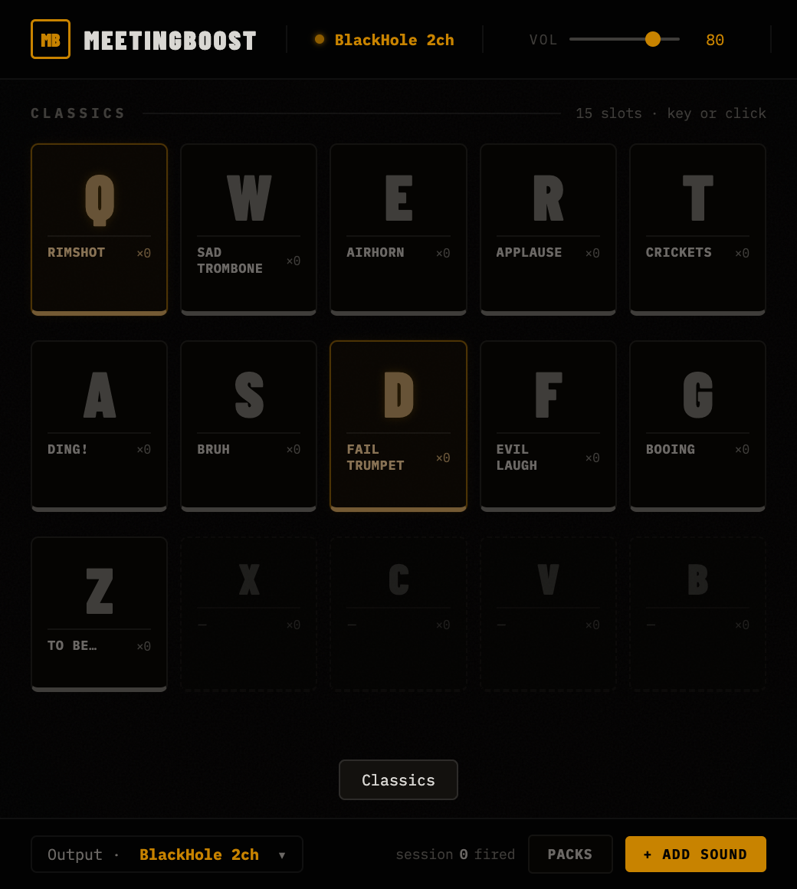
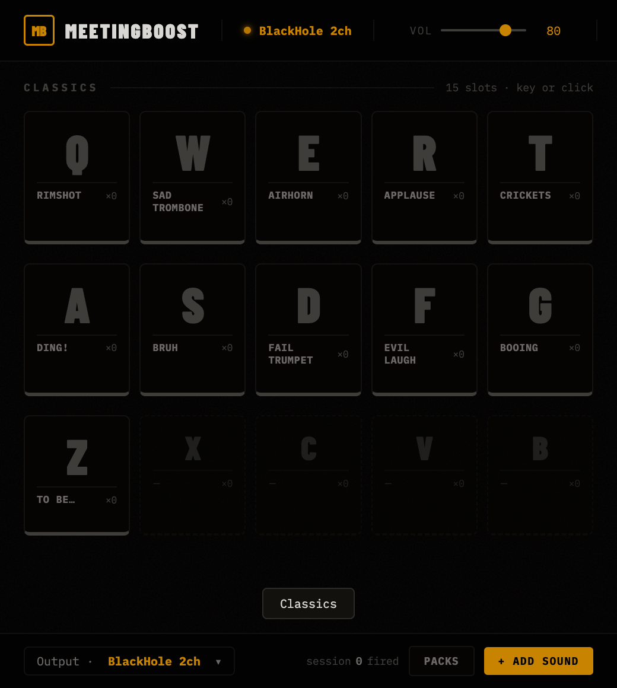
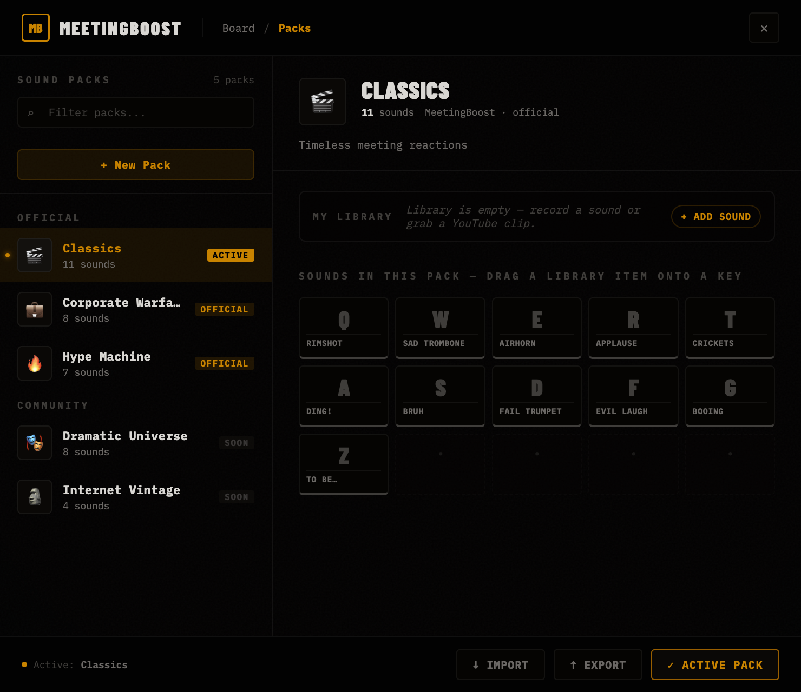
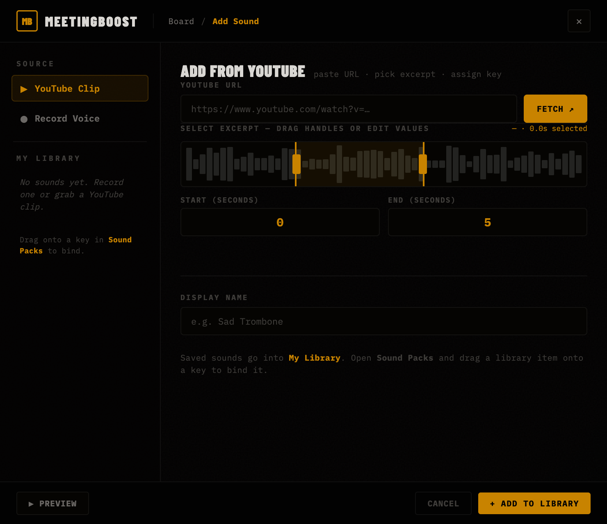
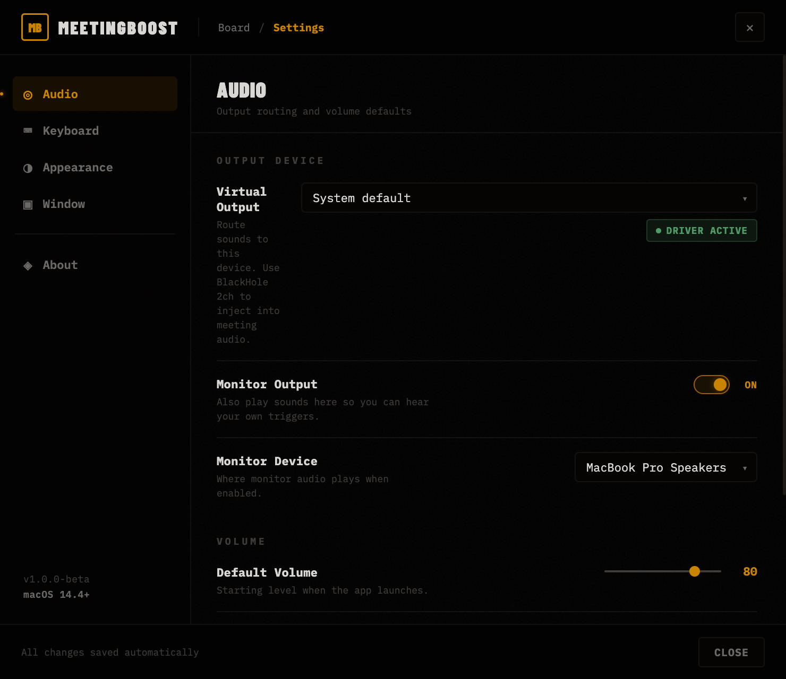

Meeting audio for operators · macOS
A 520×580 window that turns your keyboard into a meeting audio console. Built for developer advocates, community managers, and meeting hosts. Each letter fires a sound through BlackHole into Zoom, Teams, or Meet. One keypress. No menus. No alt-tab.
The tile lights before the sound plays. You never wonder if the press registered.
This is meeting infrastructure for people who run calls — built around keyboard shortcuts and BlackHole, not Discord overlays or stream decks.
All settings live in a JSON file at ~/Library/Application Support/MeetingBoost. That's it.
MeetingBoost lives in the menu bar and pins a 520×580 window above your other apps. The window listens for letter keys (with Accessibility permission, even when it's not focused). Each key fires an MP3 through your selected output device. Send that output to BlackHole 2ch, and your meeting's microphone picks it up.
The board sees the keydown, lights the tile, fires the bound sound at the configured volume.
setSinkId()
BlackHole 2ch
Zoom, Teams, or Meet hear it as your microphone. The whole room laughs. Nobody saw you click anything.
Every screen in MeetingBoost shares the same vocabulary: monospace labels, amber for what's live, a 3-pixel keycap drop-shadow that collapses on press. The board is the primary; everything else exists to feed it.





26 sounds across three curated packs. Hot-swap from the Packs screen and the board re-skins instantly. Each pack maps to the same Q–T / A–G / Z–B physical key positions, so muscle memory carries over.
Voice memo, YouTube clip, YouTube pack, shared archive. Every route ends the same way: a key, a label, a sound on the board.
Click the mic, speak for up to 30 seconds, listen back, name it, hit Add. Lives at src/sounds/custom/.
Paste a URL, scrub to a 1-to-10 second excerpt, assign it to a key. yt-dlp + ffmpeg handle the rest.
Paste a chaptered video or playlist URL. The app detects each chapter or video, you uncheck what you don't want, and a new pack lands on the board with keys assigned. One paste, one pack.
A zip with a fixed layout. Drop one in, MeetingBoost merges it. On id collision it auto-suffixes, never clobbers.
One file, one pack, no installer. The format is a regular zip with a fixed layout: manifest.json at the root and an sounds/ directory of MP3s. Both zip and unzip ship with macOS, so no extra runtime is needed to round-trip.
Hand a designer your "Demo Day" pack as a single 2 MB file. Their MeetingBoost merges it on import. If their existing pack collides on id, it auto-suffixes (your-pack → your-pack-2). Nothing gets clobbered, ever.
{
"mbpackVersion": 1,
"id": "classics",
"name": "Classics",
"description": "Timeless meeting reactions",
"keys": {
"q": { "label": "Rimshot", "file": "sounds/rimshot.mp3" },
"w": { "label": "Sad Trombone", "file": "sounds/sad-trombone.mp3" }
},
"exportedAt": "2026-05-01T12:00:00.000Z"
}
If you have node and a fresh terminal, you're ninety seconds away from a board that fires sounds. The downloader pulls 26 royalty-free MP3s from Pixabay (about 10 MB total).
brew install node@20 ffmpeg yt-dlpgit clone https://github.com/extrainio/meetingboost.gitcd meetingboost && npm installmake sounds && make devOnly if you tell them. From the meeting's perspective, the audio comes through your microphone the same way your voice does. There's no banner, no badge, no "powered by".
No. MeetingBoost plays sound files; it does not modify your voice. If you want voice effects for streaming or gaming, use Voicemod or Clownfish — different category, different tool.
Yes for local listening, no for meeting injection. Without a virtual driver, the sounds play through your speakers but the meeting can't hear them. BlackHole is the missing wire between this app and Zoom.
macOS gates global keystroke listeners behind Accessibility. We need it so letter keys fire sounds even when the board isn't the focused window. If you decline, sounds still fire when the board has focus.
No. No analytics, no crash reporting, no "anonymous usage data". Settings are a single JSON file you can read, edit, and delete.
Yes, the .mbpack format is the whole point. Export from the Packs screen and share the file. Make sure the audio inside is yours to share.
Not yet. The Electron app would compile, but the audio routing layer assumes BlackHole and the global key listener uses CGEventTap. A port is on the long-term list.
One file, one keypress, one perfectly-timed reaction. Free, MIT-licensed, no account.